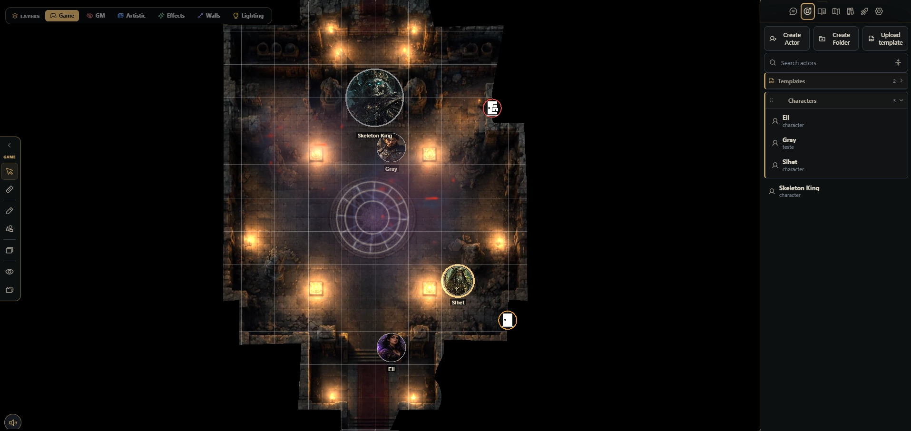
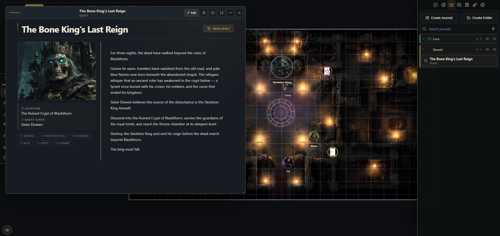
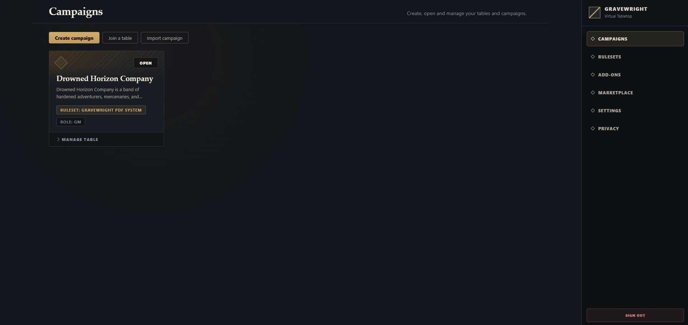

Turn maps into places
Let players discover rooms, follow light through a doorway, and feel the weather change around them.
Gravewright v1.0.0 Beta 3 · SDK 1 RC 1
Your worlds deserve more than a grid and a character sheet.

Why Gravewright?
Gravewright brings maps, characters, combat, campaign notes, and visual storytelling together in one focused space. It adapts to the identity of your RPG instead of making every game feel the same.
Let players discover rooms, follow light through a doorway, and feel the weather change around them.
Characters, rolls, items, notes, cards, and combat stay together so the table spends less time searching.
From quiet fog to magical storms, the scene can support the feeling you want at the table.
Your worlds, campaigns, and table data remain yours-with the freedom of an open-source project.
Around the table
Preparation should feel creative, play should feel effortless, and the software should never become the main character.

Organize the campaign, shape each reveal, and keep the tools you need close without crowding the table.
Enter through the browser, find your character, and stay connected to what is happening in the scene.
Carry characters, discoveries, missions, and consequences forward from one session to the next.
Built for play, still growing
Run a one-shot, explore a new system, or bring your campaign along while Gravewright continues to improve.
Your feedback during Beta helps shape a more dependable and enjoyable first LTS release.
Keep verified backups of any campaign data you care about.
What is new
The operator CLI and the public SDK are certified in parity against SDK 1 RC 1. Packages still declare sdkVersion: "1"; RC status is release metadata.

Scaffold all six package kinds with flags, a guided wizard, ruleset templates, dry runs, JSON output, validation, and Package Doctor.
Marketplace v2 publishes Core and packages through stable, testing, and dev, with explicit provenance and verified artifacts.
Indexed inline or lazy documents give actors, items, scenes, cards, decks, journals, and other content a consistent import format.
Stable JSON errors, bounded AI diagnostics, local refresh, and verified remote updates make tooling predictable without bypassing confirmation.
Try Gravewright
Advanced: run from source
Most Game Masters should use the packaged release above. Continue here only if you want to run the latest source code or contribute to the project.
git clone https://github.com/Gravewright/gravewright.git
cd gravewright
cp .env.example .env
uv sync
chmod +x grave
./grave doctor
./grave run --openWindows PowerShell
This is the source-code workflow for Windows. It is not required when using the packaged Windows release.
git clone https://github.com/Gravewright/gravewright.git
cd gravewright
Copy-Item .env.example .env
uv sync
.\grave.bat doctor
.\grave.bat run --openThe experience
Gravewright connects preparation, atmosphere, action, and campaign memory so every part of the session feels like the same world.
Choose a clean, lightweight presentation or a richer cinematic experience without changing it for everyone else.
Doors, walls, light, and movement work together so exploring a scene feels coherent and rewarding.
Weather, animated light, and scene effects help every location carry its own identity.
Invites, ready checks, snapshots, search, and campaign tools handle the busywork around the adventure.
Gravewright is built to feel like a tabletop first. Create a scene, invite the group, move tokens, reveal the map, roll dice, use cards, track combat, and keep the session moving.
Want Gravewright to understand your game? Ruleset packages can define the sheets, rolls, resources, conditions, combat behavior, initiative, and presentation that make your system unique.
Gravewright stays open to experimentation. Addons, themes, libraries, content packs, and reusable assets can extend a table without changing the core project.
The technical documentation is there when you need it, but players and GMs do not need to learn the SDK to use Gravewright.
Developer documentation →Help shape Gravewright
Gravewright is still growing, and real tables are some of the best testing environments. Useful contributions include:
Project Status
Beta 3 includes the main pieces expected from a general-purpose VTT and certifies the CLI and package workflow against SDK 1 RC 1.
The next stage is less about proving how many features Gravewright can have and more about making the whole experience dependable, polished, and easier to use.
Beta software can still change. Keep backups of important campaign data.
Language
The primary project documentation is written in English.
The wiki is also available in Brazilian Portuguese and Spanish from its language selector.
Português (Brasil) →